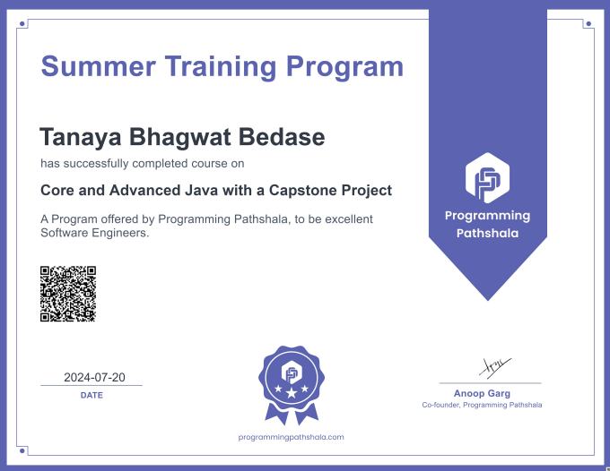
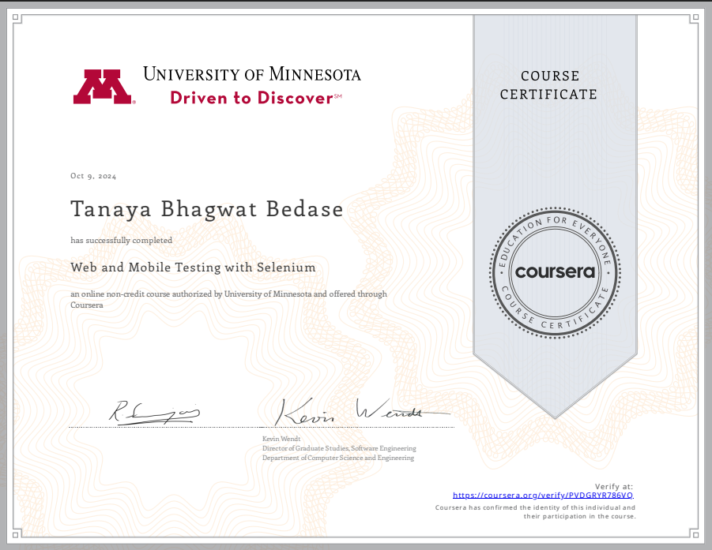
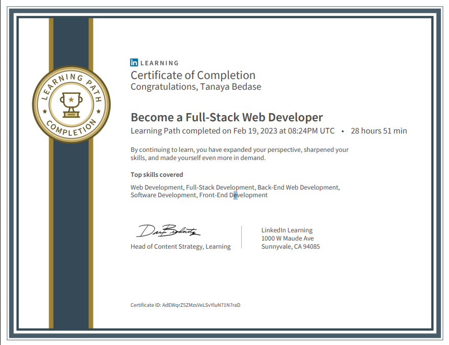
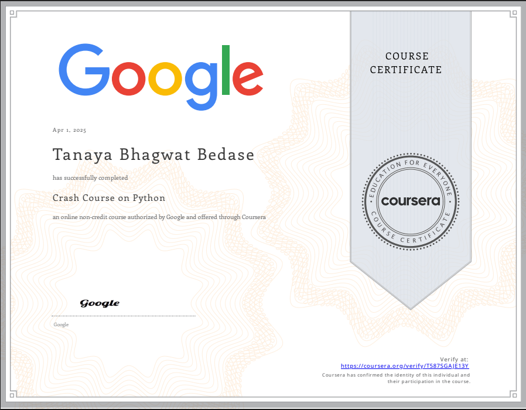
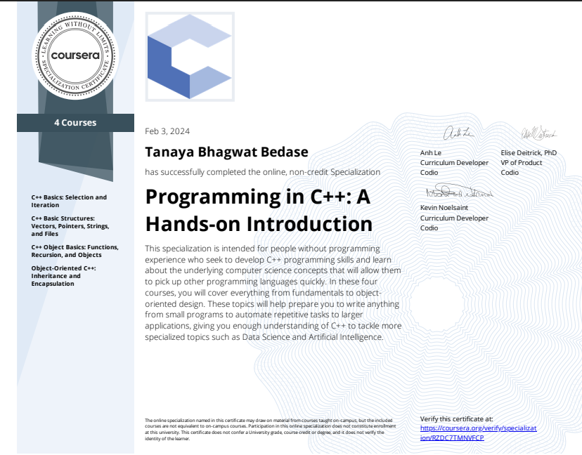
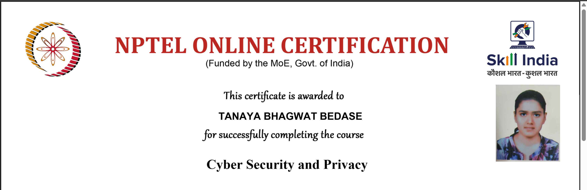

About Me
Hi, I’m Tanaya Bedase, a B.Tech CSE student at Lovely Professional University, specializing in Software Development, Testing, and Web Development. I’m proficient in Java, C++, Python, and JavaScript, with experience in frameworks like Node.js. I have hands-on expertise in API testing using tools such as Postman, JMeter, SoapUI, and Maven, and I focus on building robust full-stack applications while continuously expanding my skills in emerging technologies.
Skills & Technologies
Programming Languages
Python
Java
C++
JavaScript
Frontend Development
HTML5
CSS3
Backend Development
Node.js
Databases
MySQL
Tools & Frameworks
AWS
Postman
SoapUI
JMeter
Katalon
Jenkins
Projects
Capstone Project
• Developed a backend system for a dating app that matches users based on age, gender, location, salary, interests.
• Strengthened my advanced Java coding skills by applying key concepts in project development.
• Developed the system to provide a smooth and seamless user experience, resulting in an A+ grade.
Tech: Java
Music Website
• Created a music website that provides navigation to various aspects of an album launch, including visualizers, album orders, streaming platforms, and newsletter subscriptions.
• Improved my frontend development skills by mastering HTML, CSS, and JavaScript.
• Updated the website regularly with different music albums to enhance my skills and gain hands-on experience.
Tech: HTML, CSS, JS
Certifications & Courses
Advanced Java - Programming Pathshala
Web & Mobile Testing - Coursera
Full-Stack Developer - LinkedIn
Crash Course on Python - Google
Programming in C++ - Coursera
Cyber Security and Privacy - NPTEL
Experience (Internships & Work)
Advanced Java Summer Training Program (June 2024 – July 2024)
• Polished core and advanced Java coding skills through guided mentorship and extensive hands-on practice during the summer training program.
• Developed a fully functional dating app where users can search and connect based on criteria such as age, location, interests, and gender.
• Scored 83 on the project implementation during the certification interview using IntelliJ IDEA.